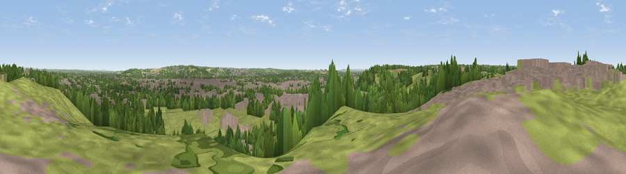

Viewpoint near Anslow
#29522 in England · top 50% of its area beats it · near AnslowWhere it is
The exact computed spot (SK 22925 24025). Click the marker for map links.
The view, rendered

A 360° render of this exact spot computed from the terrain model, tree cover and land cover — summer colours, afternoon light, calibrated against photographs of famous viewpoints. Real trees, hedges and buildings will differ in detail.
The panorama
Grey silhouette: terrain skyline in each direction (720 bearings, Earth curvature and refraction included). Dashed green: skyline with trees (+15 m) and buildings (+8 m) as obstacles. Blue strip: how far the ground is visible on each bearing.
Where the view opens
Wedge length = distance to the farthest visible ground on that bearing (vegetation-aware). Rings at 10, 25 and 50 km.
What fills the view
43% grassland · 33% built-up · 20% woodland · 3% cropland
Angular shares of the visible panorama (visual magnitude), not map area. Landscape diversity 0.51 (0–1 Shannon).
Key numbers
More beautiful places nearby
The staircase of upgrades: each row has a higher view potential than everything closer. Driving times are estimates from straight-line distance, calibrated against real road routing — check an actual route before setting out.
| Place | Direction | Drive | Score |
|---|---|---|---|
| Viewpoint near Tatenhill | SW · 2 km | ~6 min | 46.8 |
| Viewpoint near Burton upon Trent | ESE · 3 km | ~8 min | 50.6 |
| Viewpoint near Burton upon Trent | ESE · 4 km | ~9 min | 53.4 |
| Viewpoint near Newton Solney | ENE · 4 km | ~10 min | 55.0 |
| Viewpoint near Hartshorne | ESE · 11 km | ~21 min | 59.5 |
| Viewpoint near Whitwick | ESE · 22 km | ~37 min | 63.6 |
| Viewpoint near Whitwick | ESE · 23 km | ~38 min | 71.2 |
| Viewpoint near Stanton under Bardon | ESE · 25 km | ~41 min | 76.0 |
52.81329, -1.66132 · source: screening · position refined by local search. Computed location — check access rights before visiting.